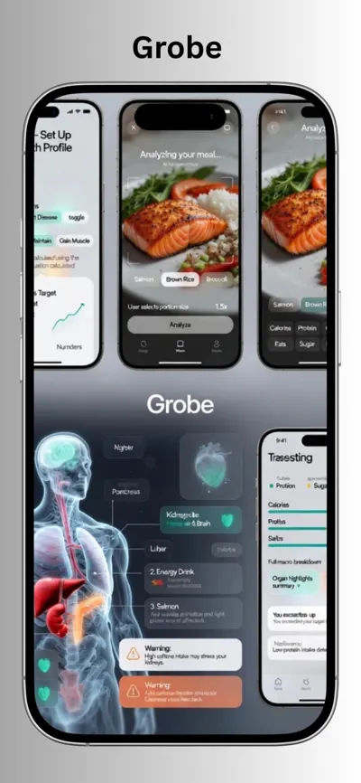
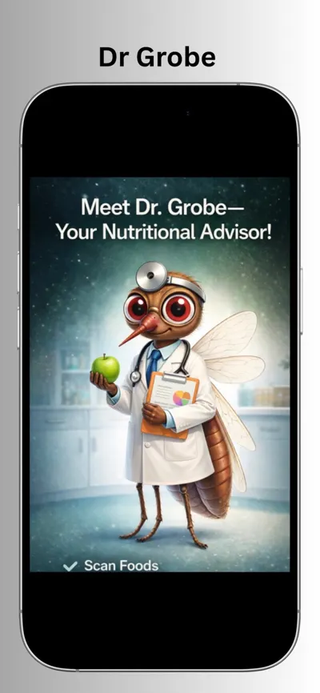
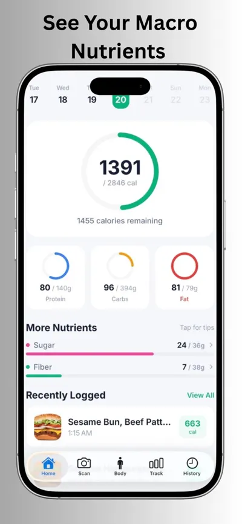
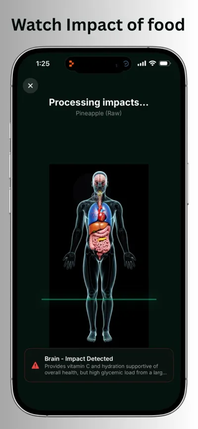
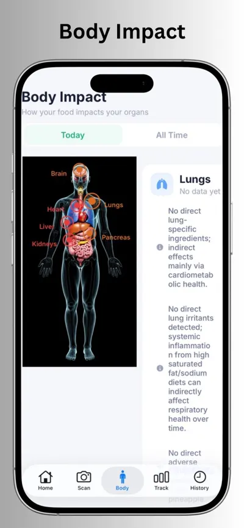
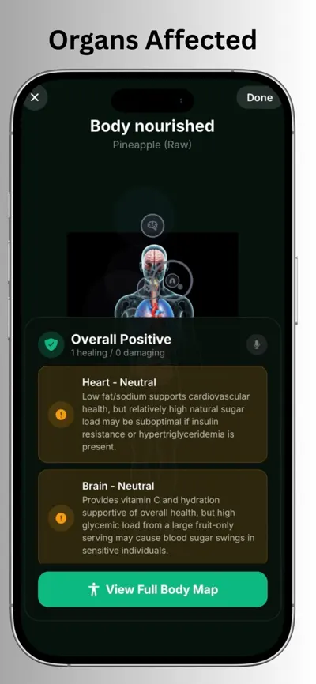

Snap your food. See what it does to your body.
Grobe is an AI food photo nutrition scanner for iPhone. Take one picture of your meal and get calories, macros, vitamins and minerals, plus clear insights into how it affects your heart, gut, brain and more.
Download on the App StoreUsed by 3,000+ people · Free to download

Health insights from a single food photo
AI calorie & macro scanner
Point your camera at any meal and get calories, protein, carbs and fat in seconds. No barcode or manual entry needed.
Vitamins & minerals
See the micronutrients in every meal so you can spot gaps in iron, magnesium, vitamin D and more.
What food does to your body
Organ-level insights show how a meal can affect your heart, liver, gut, brain and energy.
Monthly health challenge
Earn XP for healthy meals and climb a community leaderboard that resets every month.
Inside the app





How it works
1. Snap
Take a photo of your breakfast, lunch, dinner or snack.
2. Analyze
Grobe's AI identifies the food and estimates its nutrients.
3. Understand
Learn what that meal means for your body and make better choices next time.